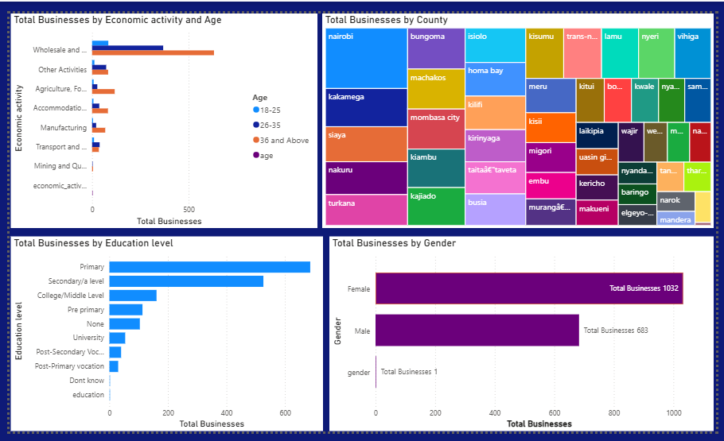

A data story of Micro and Small Enterprises in Kenya
Page 1: Overview of MSEs
This overview highlights the structure of the MSES dataset, showcasing the scale and diversity of businesses across regions.
At a glance, we see the total number of businesses, their average size, the balance between urban and rural enterprises, and the average age of owners.
These headline KPIs set the stage for deeper exploration into economic activity, demographics, and business performance.
This page therefore highlights the big picture of Kenya’s Micro and Small Enterprises (MSEs).
The dashboard explores the distribution of enterprises across urban and rural areas,
average business size, and sectoral breakdown.
Total Businesses: 2,000 registered enterprises
Average Size of Business: 8 employees
% Urban vs % Rural: Urban 49% | Rural 51%
Top Economic Activities: Agriculture, Trade, and Services
Figure 1: Overview dashboard of MSE distribution and activities.
Page 2: Business Demographics
Business ownership in MSES is shaped by diverse demographics. The dashboard illustrates how gender, age, and education level influence entrepreneurial participation.
We observe generational patterns, with younger owners concentrated in urban hubs, while experienced owners dominate rural enterprises.
Educational attainment emerges as a critical factor, correlating with the scale and diversity of economic activities undertaken
This dashboard breaks hence down businesses by age, education, gender, and county.
Several key patterns emerge:
Economic Activity & Age: Most businesses are concentrated in
Wholesale and Retail Trade, dominated by owners aged 36 and above,
while younger groups (18–25) are underrepresented across most sectors.
Geographic Spread: Business activity is highly concentrated
in counties such as Nairobi, Mombasa, and Kiambu, with fewer businesses in
sparsely populated regions like Turkana and Marsabit.
Education Levels: A majority of business owners have only
primary or secondary education. College-educated and university-educated
business owners are fewer, suggesting businesses are driven more by opportunity
and necessity than formal training.
Gender Distribution: Female business ownership is strong,
with women running slightly more businesses than men. This highlights the
vital role of women in entrepreneurship.
Dashboard Screenshot:

Page 3:Business Size and Employment
“Business size and employment capacity are critical indicators of economic resilience.
This dashboard explores how businesses differ in scale—from sole proprietors to large employers.
Patterns show that family status, education, and location influence business size and employment potential.
The narrative here emphasizes the contribution of MSMEs not just as economic units, but as engines of job creation.”
The majority of SMEs operate without employees (1,199 businesses) compared to those with 1–49 employees (516 businesses).
This highlights that SMEs in Kenya are primarily self-employment ventures rather than structured job-creating enterprises. Their employment contribution is therefore limited despite their large numbers.
Demographics of SME Owners:
Ownership is dominated by individuals aged 36 years and above (over 1,000 businesses). Younger entrepreneurs, especially those aged 18–25, account for a very small share.
SMEs are largely run by older individuals, suggesting that youth face barriers to entry such as limited capital, business experience, or networks. Middle-aged owners (26–35, 36+) are more likely to operate businesses that employ others.
Economic Activity Distribution
SMEs are highly concentrated in Wholesale and Retail Trade (1,083 businesses), while other sectors such as Agriculture (168), Food Services (152), and Manufacturing (126) are far less represented. Capital-intensive sectors like Mining and Quarrying are almost absent.
The SME sector is dominated by low-barrier, trade-oriented activities. This structure limits their potential to drive industrialization, value addition, and large-scale employment.
Overall Implications
SMEs in Kenya are crucial for livelihood support but struggle to transition into growth-oriented, job-creating enterprises.
The dominance of older entrepreneurs and trade activities signals a need for **targeted support policies**, particularly to:
Empower youth to start and scale businesses.
Encourage diversification into manufacturing and agribusiness.
Provide credit, mentorship, and training to help SMEs expand beyond survival-level operations.
Data Cleaning & Preparation
The raw data was cleaned and transformed in Python before being visualized in Power BI.
The cleaning steps involved handling missing values, standardizing categories,
and restructuring demographic variables.
You can view the complete Python cleaning script here:
View Python Code